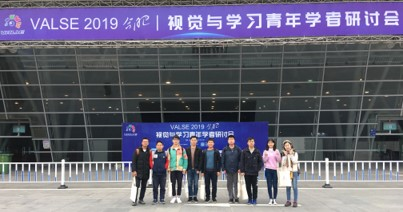
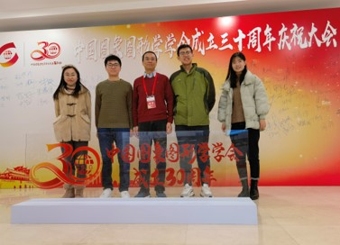
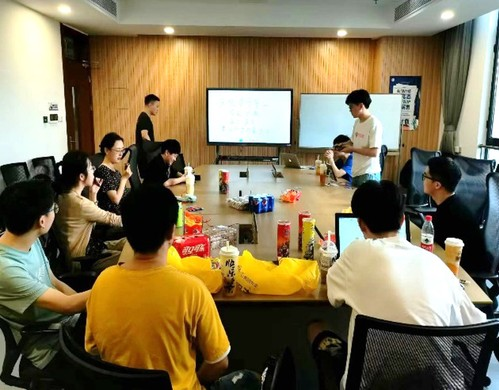

为弘扬五四精神，传承红色基因，选树一批可亲、可敬、可学的先进青年榜样，引领青年贡献青春力量，第七届复旦大学青年五四奖章个人、集体终审答辩会于四月下旬顺利举行，一批优秀的青年复旦人和集体脱颖而出。
经单位推荐、通讯评审、资格审查、终审答辩、学校审核等程序，评选出“第七届复旦大学青年五四奖章（个人）”10名；经单位推荐、校团委评审、资格审查、终审答辩，评选出“第七届复旦大学青年五四奖章（集体）”10个。
计算机科学技术学院数字媒体实验室青年团队获“第七届复旦大学青年五四奖章（集体）”
数字媒体实验室青年团队

数字媒体实验室青年团队目前共有33名教学科研人员，包括教育部长江学者1人，依托上海市智能信息处理重点实验室、数字文化保护与旅游数据智能计算文化和旅游部重点实验室等，主要研究方向为人工智能、计算机视觉、图像/视频增强处理、智慧医疗等。团队的青年教师秉承着“实践创新，追求卓越”的理念，以严谨的态度、高度的热情和责任心投入工作，获教育部自然科学二等奖等多项荣誉。团队围绕国家数字媒体领域的重大战略需求和行业迫切需要，不断在科研创新、服务社会、人才培养等方面取得突破。
以理论研究为基础，寻求技术突破
团队聚焦数字媒体原创研究，在智能媒体理论与应用方面取得了多项突破，技术水平业界领先，在IEEE Transactions等国际期刊与ICCV、CVPR、AAAI等CCF A类国际顶级会议发表论文60余篇。团队针对新一代数字媒体应用中面临的各种问题，例如媒体适配显示看不真、远距离小物体看不准、低质低分辨率看不清等，重点研究了空间与语义的连贯性机理、重要性局部特征的相似性机理、任务驱动增强的多域性机理等科学问题，形成了“理论-算法-系统-应用”一体化的新型科研模式。团队成果在效率、主客观质量上均有显著提升，能够在有限的资源下极大满足用户的需求，提升用户的体验质量，具有积极的社会影响。
团队以国家战略为导向，围绕行业迫切需要，瞄准移动通信技术、人工智能、大数据等前沿科技的痛点、难点，对数字媒体及交叉融合多任务等关键技术展开深入研究，实现流媒体信息的实时感知、耦合、计算和传输。团队获国家优秀青年科学基金、国家自然科学基金—广东联合重点基金、面上基金、青年基金、华为基金等多项省部级项目和企业合作项目的重点支持。
团队的科研成果具有广泛的影响力，荣获2020教育部自然科学二等奖、2019中国图象图形学学会科学技术二等奖、ICME 2020最佳（学生）论文亚军奖、全国多媒体技术学术会议NCMT最佳论文奖等多项荣誉。
以国家战略为导向，赋能社会发展
在国家重大战略需求的推动下，团队把学术追求与现实关切紧密结合，重点围绕“智慧终端”、“智慧安防”、“智慧医疗”等领域进行了深入的研究和创新。团队基于图像智能再生理论研发了手机的AI ZOOM功能，可在拍照时实现对小目标的放大。该成果作为亮点应用于华为旗舰系列手机，包括Mate系列、P系列、荣耀系列等，服务全球数十亿用户。该成果在华为各发布会上进行了亮点展示，进一步推进了科技攻关和应用落地，得到社会的广泛关注。

团队基于数字媒体智能再生的连贯性分析，提出一种条件式视频浓缩技术。针对视频摘要的技术难点，团队创造性地引入线切割技术，在保证视频浓缩率的前提下，进一步保证了目标的完整性、轨迹的连续性与前背景融合的合理性，提升了任务的主观效果。该成果已应用于公安系统赋能智慧城市建设，公安民警将一段长达12小时的监控视频浓缩至5分钟，使监控搜寻时间减少99%，大大提升了破案效率，进一步将科技转化为社会生产力。
基于相似性保持的智能再生成果，团队研发了“内镜智慧眼”核心算法与硬件系统。该系统即插即用，能够实现实时的视觉辅助，可达135帧/秒；并能自动诊断病变区域，诊断水准超过人类专家，敏感度高达97.8%。该系统已在复旦大学附属中山医院、徐汇区中心医院等医院落地应用，在该系统的辅助下，医生诊断的平均敏感度从74.2%提升至89.2%，大幅减少漏诊。目前已累计约8万余名患者受益，获内镜医生高度评价，成功推动医疗行业的数字化发展。
以立德树人为根本，打造人才高地
团队坚持落实立德树人根本任务，充分发挥科研育人功能，将人才培养与科技创新紧密结合，重视培养学生的家国情怀和责任感。在服务学校建设方面，针对复旦校史馆珍贵历史影像资料高清化的需求，团队将数字媒体智能再生的相关理论付诸实践，克服了历史影像资料退化类型未知、复杂多样、无训练数据等重大挑战，在提升影像资料分辨率的同时增强了影像的细节，助力传承“复旦记忆”。在服务疫情防控方面，团队积极将成果应用于视频分析等，为学校管理工作节约了人力和时间，大大提升了工作效率，获得高度评价。
在学生发展方面，团队以学生为本，对学生给予近距离、个性化的指导，提升育人实效。一位少数民族博士生，科研基础相对薄弱，饮食等有文化差异。团队因材施教，使其仅用3年就获得了博士学位，共发表11篇论文并获得国家奖学金。团队鼓励学生全面发展，推进服务育人。博士生林青入选复旦大学“人才工程”预备队，团队不仅在科研上给予其指导和帮助，也充分关心和支持她的学生工作。在团队的培养下，她的科研与工作均被认可，获得博士生国家奖学金和复旦大学十佳研究生辅导员等荣誉。

团队学术氛围宽松、浓厚，培养了一大批具有国际视野和国际竞争力的人才，指导的学生本科毕业设计连续多年荣获“复旦大学优秀本科学位论文”；培养的首个博士后获“博新计划”、上海市“超级博士后”及复旦大学“优秀博士后”资助，出站后在复旦大学任职青年研究员；1名博士毕业论文获评CSIG“优秀博士学位论文提名奖”等。